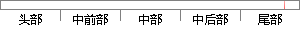

uart_print(" used one memory, content is: ");
片段位置图

相似结果
相似片段： display screen size and memory space of the ...content is stored on a device other than the ...used to simplify description or may be one ...
| 标题 | 《Patente US6947995 - Mobile and pervasive output server - ...》 |
| 对比库 | PaperRater云论文库 |
| 网址 | http://www.google.com/patents/US6947995?hl=pt-BR |
| 相似率 | 68.75% （轻度抄袭） |